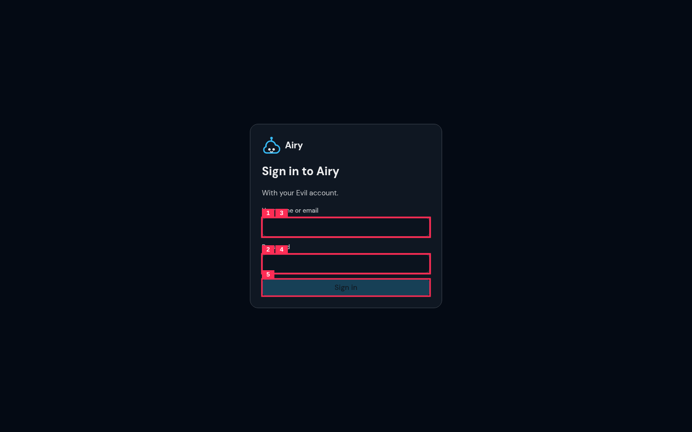

5 boxes: 5 not a defect here; axe 0 violations, 17 passes. Numbers match the boxes.
15px is the kit's desktop field text; the 16px rule is the iOS zoom rule for phones, and the 375 and 320 shots have no finding
Done: kept: desktop field size is an open owner call, the pre-L6 page had the same
same as #1
Done: kept
350x41 hit area is above the desktop floor of 24px (WCAG 2.5.8); 44px is the touch rule, met at 375 and 320
Done: kept
same as #3
Done: kept
350x36 hit area, above the 24px desktop floor; the button is 48px tall on phones
Done: kept